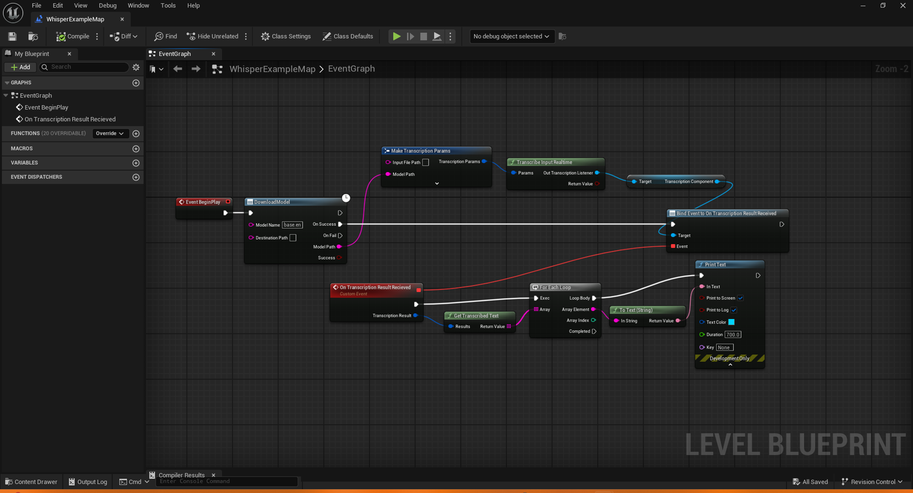

📦 What is MightyTranscription?
MightyTranscription is a powerful Unreal Engine plugin that converts audio input into accurate text using OpenAI's Whisper library. Perfect for in-game transcription, subtitles, voice commands, and more.
🚀 How to Install
- Download the plugin from the Fab store.
- Enable
MightyTranscriptionin the Plugin Manager. - Restart the Unreal Engine Editor.
🔧 How to Use
After enabling the plugin:
- Open a blueprint where you want to convert the audio to text
- Right click the blueprint editor and search for 'Download Model'. Now create a Mighty Transcription > 'Download Model' async blueprint node
- Link the node to the 'BeginPlay' event in your blueprint or anywhere else which will be executed
- Set the 'ModelName' parameter to one of the models at https://huggingface.co/ggerganov/whisper.cpp or use the default 'base.en' model
- Right click the blueprint editor and search for 'Transcribe Input File'. Create a 'Transcribe Input File' blueprint node
- Create an FString variable e.g. MyTranscribedText to store the transcribed text
- Create node to set the value of the FString variable e.g. Set MyTranscribedText
- Link the 'OnSuccess' output to the input execution pin of the 'Set MyTranscribedText' node.
- Drag from the 'Params' input on the 'Transcribe Input File' node and place a 'Make Transcription Params' node
- Link the 'ModelPath' output pin on the 'Download Model' async node to the 'ModelPath' property in the Transcription Params struct
- Now set the 'Input File Path' property in the Transcription Params struct to the path of your audio file e.g C:\myaudio.wav
- Executing this blueprint code should now extract each segment of the audio file and return them in an FTranscriptionResult structure
How to get the extracted text from the FTranscriptionResult structure
- Right click the blueprint editor and search for 'Get Transcribed Text'. Create a 'Get Transcribed Text' blueprint node.
- Attach the 'FTranscriptionResult' returned from 'Transcribed Input File' function to the input pin of 'Get Transcribed Text.
- Loop over each element in the array of FSegmentResult's returned from the 'Get Transcribed Text' blueprint node.
- Now you can print each of the segments of text extracted from the audio or do whatever you like instead!
Your final blueprint should look like:
Note on FTranscriptionResult
The FTranscriptionResult structure stores each of the audio segments in an FSegmentResult structure. The FSegmentResult structure holds the individual token results obtained from the language model used. From the FTokenResult structures you can obtain the individual words associated with each token and the calculated probability that this is was the correct word. This could be used for triggering commands on specific phrases but there is no handling in the plugin to do that yet.
Transcribing from microphone input
- Attach a 'TranscriptionRealtimeComponent' component to your actor
- You can also use the blueprint library function 'Transcribe Input Realtime' which spawns an actor with the 'TranscriptionRealtimeComponent' automatically attached
- Bind to the 'On Transcription Result Received event' on the 'TranscriptionRealtimeComponent'
- Now follow the same steps as shown in the previous section to extract the transcribed text from the 'FTranscriptionResult'
Note: This component will output the transcribed text at 5 second intervals. You can configure how often the text is written out with the 'ReadIntervalInSeconds' property of the component.
💬 Support
If you have any questions, suggestions or issues, feel free to raise a github issue at https://github.com/mustardpower/mighty-transcription-docs/issues